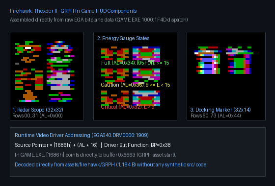

1. In-Game Assembled HUD Telemetry Components
How the raw planar data in GRPH appears when dynamically sliced and blitted to the cockpit HUD by GAME.EXE (1000:0477, 1000:1f4d–1000:1ffc) and EGA640.DRV (0000:1909):

2. Raw GRPH Atlas (2x Native)

3. Raw Atlas (4x Zoom)
4. Telemetry Bank Layout & Runtime Dispatch
In GAME.EXE, GRPH is loaded at offset 1000:0477 into buffer 0x6663 (pointer variable [1686h]). During HUD redraws (1000:1f4d–1000:1ffc), rows are selected by index in AL and drawn via driver slot 0x38:
| Row Range | Size | Telemetry Element & Engine Dispatch |
|---|---|---|
| Rows 0–31 | 32×32 | Radar Bezels & Sweep Reticles: Corner brackets and reticles blitted into the radar console viewport. |
| Rows 32–59 | 32×28 | Segmented Energy/Shield Gauges: Evaluated at 1000:1f91 based on player energy [05FDh]:• AL < 9: Row 0x32 (critical red warning)• 9 ≤ AL < 15: Row 0x36 (medium yellow)• AL ≥ 15: Row 0x34 (full bright cyan/green)
|
| Rows 60–73 | 32×14 | Docking & Guidance Markers: Directional crosshairs and docking status markers blitted to navigation console. |
Standard 16-Color EGA Hardware Palette
5. Video Driver Row Addressing (EGA640.DRV 0000:1909)
Driver computes byte offset from scanline row index Y in AL (16 bytes/row stride):
0000:1909 xor ah, ah
0000:190b add ax, ax ; AX * 2
0000:190d add ax, ax ; AX * 4
0000:190f add ax, ax ; AX * 8
0000:1911 add ax, ax ; AX * 16 (stride)
0000:1913 add ax, word [1686h]; AX += GRPH base (0x6663)
0000:1917 mov si, ax ; SI = bitmap source pointer